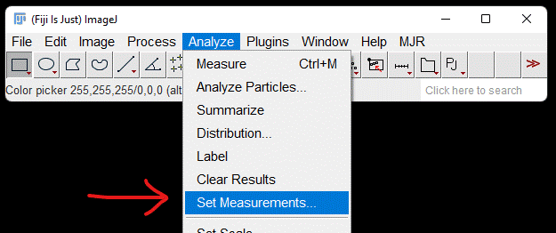
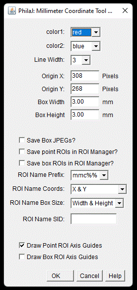
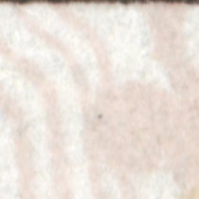
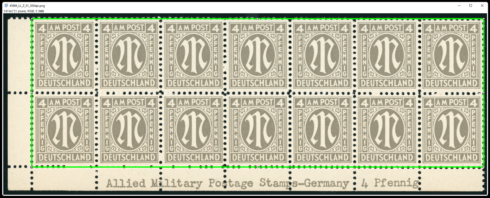

PhilaJ: Philatelic Tools For ImageJ
| Author: | Mitch Richling |
| Updated: | 2022-04-23 09:54:13 |
| Generated: | 2022-04-23 09:54:16 |
Copyright 2022 Mitch Richling. All rights reserved.
Table of Contents
- 1. Introduction
- 2. Some PhilaJ Features
- 3. Learning ImageJ
- 4. Using PhilaJ
- 4.1. Install Fiji
- 4.2. Installing PhilaJ
- 4.3. Activate PhilaJ
- 4.4. Keyboard short-cuts
- 4.5. Tool-set Buttons
- 4.6. PhilaJ Tools
- 4.6.1. Dynamic perforation gauge
- 4.6.2. Reusing Dynamic Perforation Gauge ROIs
- 4.6.3. Static perforation gauges
- 4.6.4. User Installable Customized Specialist Gauges
- 4.6.5. Measuring Design & Margins
- 4.6.6. Coordinate Tool
- 4.6.7. Position Finder
- 4.6.8. Measuring Edges
- 4.6.9. Grill Tool
- 4.6.10. Working With Multiples & Sheets
- 4.6.11. Image Rotation
- 4.6.12. Making Images From Selections
- 4.6.13. Overlay/ROI Measure
- 4.6.14. Measuring ROI Offsets
- 4.6.15. PhilaJ Image Load & Save
- 4.6.16. ROI Sidecars
- 4.6.17. Note Sidecars
- 4.6.18. Convert image scale units to mm
- 4.6.19. Image Resize To Scale
- 4.6.20. Scale ROIs
- 4.6.21. Alternate interfaces to the ImageJ set scale command
- 4.6.22. Set scale via DPI
- 4.6.23. Set scale from DPI file name
- 4.6.24. Philatelic Data
- 4.6.25. Philatelic Unit Conversions
- 4.6.26. Scale Report
- 4.6.27. Bulk Processing Images
- 4.6.28. Cleanup Windows and Files
- 4.6.29. Bulk ROI Rename
- 4.6.30. Cleanup The ROI Manager
- 4.7. Capturing and adjusting properly scaled images
- 4.8. Available Specialist gauges and presets
- 4.9. A Note About The Thirkell Position Finder
- 4.10. ROIs
- 5. RPI Tools
- 6. EOF
1. Introduction
PhilaJ is software to assist with philatelic image analysis. It is built on top of the popular scientific image analysis package ImageJ/Fiji.
2. Some PhilaJ Features
While ImageJ is perfectly capable of philatelic image analysis out of the box, PhilaJ assists the philatelist by automating and simplifying many typical philatelic image processing procedures.
- Efficiently rotate and zoom images
- A single key press can switch between 100% zoom at the cursor and zoom to fit.
- Most of the time philatelists want to rotate an image so some reference line is horizontal or vertical, and that's how this tool works. Draw a line, hit a key, and the image is rotated to make the line horizontal.
- A single key press to rotate an image 90 degrees
- Semi-Automated measurements
- Stamp design centering
- Design size
- Paper size
- Check coil paper edges (parallel & large enough)
- Perforations computed from linear distances
- Measure angle difference between arbitrary edges (design, paper, perforations, etc…)
- Measurement results can be saved or directly imported into Excel
- Named ROIs in the ROI manager will automatically be used if they exist for many measurements
- Measurements create ROIs to document & save results for later use
- Perforation Measurements
- A fully dynamic perforation gauge brings perforation measurements into the digital realm. Simultaneously and accurately measure perforations frequency and hole size and on any angle
- Perforations may be directly, and very accurately, computed from simple distance measurements
- Display very customizable, old school perforation gauges (Instanta & Kiusalas) over the image so that perforations may be measured in the traditional manner.
- Specialized gauges for particular stamps like the US Liberty Issues or AMG Bari Wolf Issue
- Grills
- Display a very customizable template of US Grills over image
- Standard grill characteristics are all pre-programmed:
- Split up an image of a sheet into a stack of individual stamps
- Thirkell-type position finder (automatically positioned over the design ROI)
- Millimeter Coordinate Tool (a modern, digital take on the Thirkell).
- Tools to document plate flaws with coordinates and thumbnail images.
- Full support for my DIY Microscope camera is included (live video, captures, measurements)
- Sophisticated, and automatic management of physical image scales
- Systematic use of ImageJ/Fiji ROIs across the tool
2.1. Future Features
Some of the features listed here are very difficult to implement – complex enough they might not even be possible. Others are easy things I simply need to find the time to implement. Feel free to contact me with ideas for this list. I have no idea when, or if, I'll find the time to work on any of these, but I have tried to sort the list from highest priority to lowest:
- Automatic grill identification from grill boundary (Easy)
- Reference templates for various private perforations
- rotary vs flat press
- Templates? (Easy)
- Automatic measurement? What about graphical masking with range limits? (Not Hard)
- Watermarks
- Templates (Easy. Hardest part is obtaining correctly scaled source images)
- Automatic shape identification and match to DB of templates? Start with US. (Hard)
- Postmarks
- Templates (Hard)
- Easy way to pull in an image from https://www.stampsx.com/ratgeber/stempel-datenbank.php
- Way to categorize US post marks using the standard references
- Way to convert reference postmark raster images into vector data
- Postmark Image Processing
- Way to extract postmark data from image (Hard. Some experimental results in my ImageJ GIT repository)
- Templates (Hard)
- Plate flaws (Hard)
- Semi-automated help for comparing images and manually marking plate flaws with ROIs
- Help with aligning the images
- Good way to overlay the images and dynamically adjust transparency
- Easy way to mark flaws and create ROIs
- Fully automated analysis of an image sequence or stack to generate a "canonical stamp" & identify deviations
- Semi-automated help for comparing images and manually marking plate flaws with ROIs
- Fully automatic full sheet separation (Hard)
- Identify individual stamps
- Create stack
- Align slices
- Automatically detect paper and design edges for measurements (Hard)
- Many of the stamps I care about most have well defined frame lines, and this could be exploited in any algorithms I develop
- Automatically detect perforations for measurements (Hard)
- Mostly I care about rectangular stamps only
- It would be nice to detect the holes directly – perhaps a multi-point, affinity-descent method to find the hole bottoms?
- Compute perforations automatically (Hard)
- Via Fourier transform
- Via custom line graph analysis
- Automatic grill identification from individual grill points (Hard)
- Use up/down data provided by user to guide algorithm
- Automatically detect horizontal vs vertical ridges
- Ask user if point bounding box covers entire grill
- Use Scott numbers provided by the user to guide algorithm
3. Learning ImageJ
Because many people wishing to use PhilaJ are not already ImageJ users, this section provides some ImageJ background information and some links to learn more.
3.1. ImageJ is not Photoshop!
ImageJ is not hard to use. In many ways it is less complex than Photoshop or GIMP. That said, sometimes ImageJ newcomers stumble because ImageJ looks a lot like Photoshop & GIMP but it works quite differently. The similarity really is just surface deep. Tools like Photoshop are intended for image manipulation with an eye toward the artistic. Tools like ImageJ are intended for image measurement.
You can measure things with Photoshop. You can draw with ImageJ. You can drive a nail with a screwdriver.
So my advice while learning learning ImageJ is to keep in mind that it is a completely different tool than Photoshop or GIMP. Do not expect similar behavior. Do not expect your knowledge of Photoshop or GIMP to translate to ImageJ. ImageJ is not harder to use than Photoshop or GIMP! It is just a different sort of tool – screwdriver vs hammer.
3.2. ImageJ & ROIs
The "drawing" tools on the ImageJ toolbar are not drawing tools in that they do not draw anything (i.e. they do not manipulate the image in any way). Instead they allow the user to identify "regions of interest" – parts of the image we wish to measure. For example, we might use the rectangle tool to identify the edges of a stamp's design – so we can measure it's size perhaps to tell if it's a rotary or flat press print. As another example, we might use the line tool to identify the distance required for 11 perforation holes, and use that distance to compute the stamps perforation gauge. We might select an irregular region of the design so we can measure the colors, and then compare them to a part of the stamp we suspect may have been fraudulently manipulated.
The closest concept in Photoshop/GIMP are selections, but ImageJ ROIs are a far more general concept.
Once again. ImageJ is all about measuring things. Distances, sizes, colors, etc…
3.3. Overlays
Overlays are images & annotations placed over the image we we analyzing. Back in the day, scientists would place a transparent film over a photograph and then draw on the film. Overlays are the digital equivalent. Overlays don't modify the image pixels at all. The classical application of overlays in scientific image analysis is to annotate an image. For example, a Doctor might highlight and label the location of a bone fracture on an X-ray. An overlay may be dragged around over the image making it a useful tool for comparisons. Such comparisons generally take one of two forms:
- Looking for differences between two images
- Seeing if an image matches some standard
The two most common philatelic applications for image comparison are:
- Comparing too stamps looking for plate flaws & faults.
- Comparing a stamp and the image on a certificate. i.e. is the stamp for sale is the one pictured on the cert.
The most common philatelic applications for comparison to a standard are:
- Comparing stamp perforations to a perforation gauge (be it an Instanta-type or Kiusalas-type)
- Comparing a grill to a grill template
- Comparing a design to a rotary vs. flat plate template
The closest concept in Photoshop/GIMP are layers, but they are quite different in a few respects. The most obvious difference is a matter of content. An ImageJ overlay may contain ROIs, vector graphics, and raster data (images). In Photoshop/GIMP layers only contain raster data (images). Another big difference is a mater of quantity. In Photoshop many layers normally exist in one file; however, in ImageJ you only get one. The last big difference is in how we use them. In Photoshop/GIMP layers exist to be mixed together so that we may render a final image. In ImageJ an overlay is sometimes used to create an image (say for a scientific publication); however, overlays overlays find far more use as a tool for active analysis and measurement.
3.4. Learning how to use ImageJ
To use PhilaJ, I think the basic tutorial at imagej.net is enough: https://imagej.net/learn/
The imagej.net site is stuffed full of great content, and is one of the best sources if you want to become an ImageJ expert. That said, I think the tutorial linked above is all you really need to get started with PhilaJ.
4. Using PhilaJ
4.1. Install Fiji
From this point on, this document assumes you are using the Fiji distribution of ImageJ. If you have not yet installed it, then do so now: https://imagej.net/software/fiji/
I recommend that you install it someplace in your user directory.
4.2. Installing PhilaJ
4.2.1. The PhilaJ Package
Installing PhilaJ requires the "imagej/PhilaJ-and-RPI_Tools/PhilaJ.ijm" file in the PhilaJ distribution be copied into the Fiji toolsets directory. This
directory is normally named "macros/toolsets/", and may be found inside the Fiji install directory. For example, I install Fiji at
"c:\Users\richmit\PF\Fiji.app", and thus I copy the "PhilaJ.ijm" file to "c:\Users\richmit\PF\Fiji.app\macros\toolsets\PhilaJ.ijm".
If ImageJ was running when you copied the file, then you need to quite and restart it.
4.2.2. Specialized Perforation Gauges
You will also want to install some specialized perforation gauges. Several gauges are shipped as part of the PhilaJ distribution in the
"imagej/PhilaJ-and-RPI_Tools/SpecializedGauges" directory. For instructions on how to install these gauges see: Install New
Specialized Gauge.
4.2.3. Settings
ImageJ's default measurement settings are not ideal for PhilaJ, so we need to change those defaults. Select "Analyze -> Set Measurements" from the main ImageJ menu:

The following dialog box will appear:
It is important to select the three highlighted options:
- Area
- Bounding rectangle
- Display label
You can select others options as desired.
Why are these options important?
- Area: This one is used for centering, design, and paper measurements.
- Bounding rectangle: This one is used by most tools. It identifies the location and size of an ROI.
- Display label: PhilaJ frequently adds multiple measurements to the results window, and without labels they aren't very useful.
4.3. Activate PhilaJ
The PhilaJ toolset is activated via the toolset menu:
Then the PhilaJ macro set is selected:
Once activated, it will add a few buttons to the toolbar:
In addition to the buttons, a few keyboard shortcuts will now be activated!
4.4. Keyboard short-cuts
| Key | Action |
|---|---|
[1] (top row digit) |
Rotate Line to Horizontal – Also clears the overlay |
[2] (top row digit) |
Rotate 90 Degrees Right – Also clears the overlay |
[3] (top row digit) |
Zoom To Selection |
[5] (top row digit) |
Zoom 100% @ Cursor or if already zoomed at 100%, then switch to original zoom |
[o] (lowercase) |
Load image & ROI sidecar. Attempt to set Scale. |
[s] (lowercase) |
Save image & ROI sidecar |
[S] (Uppercase) |
SaveAs image & ROI sidecar |
[J] (Uppercase) |
Selection to JPEG |
[g] (lowercase) |
Restore/Toggle PhilaJ Overlay |
[p] (lowercase) |
Reserved |
[M] (lowercase) |
Overlay/ROI Measure |
4.5. Tool-set Buttons
4.5.1. Overlay Menu (images & annotations drawn over the stamp image in a nondestructive way)
- —
Remove/Reset OverlayOverlay/ROI Measure- —
Dynamic Perforation GaugeDynamic Perforation Gauge OptionsDynamic Perforation Gauge Presets- —
Instanta-Style Perforation GaugeInstanta-Style Perforation Gauge Options- —
Specialized Perforation GaugeSpecialized Perforation Gauge OptionsSingle Line Specialized Perforation Gauge OptionsSingle Line Specialized Perforation Gauge PresetsInstall New Specialized Gauge- —
Position FinderPosition Finder Options- —
Coordinate ToolCoordinate Tool Options- —
GrillGrill Type & OptionsGrill Options
4.5.2. Overlay Interaction tool

The
PhilaJ Overlay Interaction Toolallows a user to manipulate overlays created by the previous menu. For example, theInstanta-Style Perforation GaugeandSpecialized Perforation Gaugemay be moved around over an image in order to align them with a stamp's perforations. Some overlays, like theDynamic Perforation Gauge, may be manipulated in more complex ways. Non-PhilaJ overlays can be moved around with this tool.This toolbar button has a super power – Right click on it to bring up the primary options dialog for the currently active PhilaJ overlay.
4.5.3. Image Scale Menu (so we can measure things like distances & perforations)
- —
Set scale for DPI: 2410x2398– This odd DPI is what I get at the center of the platen on my Epson scanner. ;)Set scale for DPI: 2400Set scale for DPI: 1200Set scale for DPI: 600Set scale for DPI: 300- —
Set scale for DPISet Scale for Hoiz & Vert DPISet scale from DPI file name- —
Set scale from scale ROICreate scale ROI and add it to the ROI manager- —
Set Scale via standard ImageJ dialogSet Scale 1DSet Scale 1D from measurement results tableSet Scale 2DSet Scale 2D from measurement results tableSet Scale for Stereo Microscope Photograph- —
Convert image scale units to mmShrink image to make pixels squareResize image to target DPI- —
Remove ScaleScale Report
4.5.4. Acquiring & Saving Images & Data Menu
- —
Configure RPI Microscope CameraLive Video From RPI Microscope Camera (no capture)Capture Image From RPI Microscope CameraLoad Previous RPI Microscope Camera Captures- —
Load ROIs from PhilaJ sidecar fileSave ROIs to PhilaJ ROI sidecar file- —
Load Notes from PhilaJ sidecar file- —
Load image & ROI sidecar. Attempt to set Scale.Save image & ROI sidecarSaveAs image & ROI sidecar- —
Save Image As PNGLoad Image- —
Delete current image fileDelete current image file & close image windowDelete current image file & close associated windows- —
Close PhilaJ WindowsClose PhilaJ & Related WindowsClose Image, PhilaJ, & Related Windows- —
Process a directory of scansSelection to image (with scale)Selection to JPEG
4.5.5. Everything Else Menu
- —
ROI Manager...Bulk ROI RenameClean up ROI listDelete centering report ROIs- —
Measure DesignMeasure PaperCentering ReportCoil Edge CheckMeasure Dynamic Perf ROIMeasure ALL Dynamic Perf ROIs- —
Angle & Distance Between EdgesOffset Between ROIsCreate grill box ROI from grill points ROI- —
Rotate Line to HorizontalRotate 90 Degrees Right- —
Separate stamp sheet- —
Convert Distance to Perforation MeasurementConvert Kiusalas to Perforations per 2cmConvert Perforations per 2cm to KiusalasConvert length to millimeters- —
Kiusalas TableGrill TablePhilaJ Help
4.6. PhilaJ Tools
4.6.1. Dynamic perforation gauge
The dynamic perforation gauge is a fully interactive, digital perforation gauge capable of making very precise measurements of both perforations and hole
size. With physical perforation gauges one finds the gauge row that most closely matches the perforation holes. The dynamic gauge only has one row of
perforation dots, and the user adjusts the location (and optionally size) of these dots to match the perforation holes. The dynamic perforation gauge is
started by selecting one of the following menu items in the overlay menu: Dynamic Perforation Gauge,
Dynamic Perforation Gauge Options, or Dynamic Perforation Gauge Presets.
When using the Dynamic Perforation Gauge Options menu item, the dialog below will appear before the perforation gauge overlay is
drawn.

When using the Dynamic Perforation Gauge Presets menu item, the dialog below will appear. These presets will set the initial hole
size & spacing. Immediately after the preset dialog, the options dialog will be displayed just as if the Dynamic Perforation Gauge
Options had been used.
The initial placement of the overlay may be controlled by an active line ROI when Dynamic Perforation Gauge or
Dynamic Perforation Gauge Options is used – but not Dynamic Perforation Gauge Presets.
- If a line ROI was active when the menu option was selected, then the gauge will appear on the line
- If a line ROI is one previously created by the dynamic perforation gauge, then the number of perforation holes and perforation hole size may be automatically set.
- If no ROI is selected, then the gauge appears with the first dot in the upper left of the image and extending to the right
Once the gauge is displayed, it may be dynamically adjusted onscreen. While being adjusted a live perforation measurement may displayed. This live measurement may be presented in one of two ways: 1) graphically over the image itself, or 2) in a popup window.
- Click and drag any perforation gauge dot to move the dot around. Note that the end dot furthest away from the one you clicked on stays put while all the other dots follow your mouse around. The typical procedure is to drag an end dot to the first hole on the stamp, and then drag a dot on the other end of the perforation gauge to a hole on the other side of the stamp.
- If the HUD perforation report is being displayed, clicking on the HUD will allow you to drag just the HUD around. This is useful when the HUD is placed over a cluttered part o the stamp making the HUD hard to read.
- Clicking outside of the HUD and any perforation allows you to drag the entire perforation gauge line around on the display. This can be useful if you have just measured perfs on one edge, and wish to measure the other edge.
- Shift-Click outside of any perforation and drag to resize the perforation gauge holes. Moving away from the gauge makes the holes larger, and moving toward the gauge makes them smaller. The rate of change as you drag is slowed down to make precise chances possible, but this means that if large changes need to be made to the size you might have to repeat the procedure.
- Dots can be added or removed with an Alt-Click
- Alt-Click on a dot, and all the dots left/right of that dot will be removed to the closet gauge end.
- Alt-Click outside of any dot, and all a new dot will be added to the end of the gauge closet to the clicked point
- The number of dots may also be added by bringing up the options dialog, and changing the value in the dialog. When changed in this manner, the end dots stay put and the gauge is redrawn.
- Control-click to get a perforation report or use the
Overlay/ROI Measurecommand
In summary:
| Event | Where | Action |
|---|---|---|
| SHIFT-CLICK & Drag | off dot | resize dots |
| CLICK & Drag | on HUD | translate HUD |
| CLICK & Drag | on dot | translate dot |
| ALT-CLICK | on dot | delete end dots after clicked dot |
| ALT-CLICK | off dot | Add a dot on end closest to click |
| CONTROL-CLICK | N/A | Get a perforation report |
[M] |
N/A | Get a perforation report |
Once the gauge is adjusted to align with the stamp's perforation holes, a detailed perforation report may be generated via the
Overlay/ROI Measure menu selection or by pressing the [M] key – note that is an upper case "M".
The report will be in a popup (just like the live measurement popup) if the option "Results in measure table" is not selected, otherwise it will be in the
ImageJ measurement results window. If the "ROI Manager Use" option is set to anything other than "NONE", then ROIs describing the perforation gauge will
be saved in ROI manager for later recall – see the section Reusing Dynamic Perforation Gauge ROIs.
4.6.2. Reusing Dynamic Perforation Gauge ROIs
ROIs created by the Dynamic Perforation Gauge can be used in a few different ways. Most directly, if one is active when the
Dynamic Perforation Gauge menu is selected, then the Dynamic Perforation Gauge will startup with
matching perforation spacing, hole count, and hole size. At this point the perforations can be remeasured, or the gauge may be adjusted.
The Convert Distance to Perforation Measurement menu item will also create a perforation report if a Dynamic
Perforation Gauge line ROI is active when the menu is selected. In this case a dialog will appear allowing the user to manually adjust the numbers
before the report is generated.
To simply remeasure the perfs, the Measure Dynamic Perf ROI item is the way to go. To generate a summary report for every
Dynamic Perforation Gauge ROI in the ROI Manager, use the Measure ALL Dynamic Perf ROIs menu item.
4.6.3. Static perforation gauges
The "static" perforation gauges are just like the physical perforation gauges we use. They work just like physical perforation gauges too. That is to say, one activates the gauges and then moves it around to line up the gauge on the perforations to be measured. In PhilaJ they come in two varieties:
- "Instanta-Style" – Continuous lines graduated with perforation measurements
- "Specialist-Style" – rows of dots like the Kiusalas gauges
These tools are found in the overlay menu. Instanta-Style Perforation Gauge & Specialized Perforation
Gauge will draw the gauge immediately using the most recent, or default, settings. If you wish to change settings first, then the
Instanta-Style Perforation Gauge Options & Specialized Perforation Gauge Options menu items will pop up a
settings dialog before drawing the overlay.
One "moves" the gauge around via the PhilaJ Overlay Interaction Tool – the button just to the right of the overlay menu
button. Simply click and drag while the PhilaJ Overlay Interaction Tool is active to move the gauge around.
Note that the stamp perforations must be perfectly lined up on a horizontal line to use these gauges! To do that, draw a line along the tops/bottoms of the
perf holes, and then use the Rotate Line to Horizontal tool – in the misc menu or via the keybinding [1]. After you
have measured the horizontal perforations and wish to measure the vertical ones, rotate the image 90 degrees via the Rotate 90 Degrees Right tool
– in the misc menu or via the keybinding [2].
Unlike physical gauges, these gauges can be customized in various ways. First the graphical presentation (colors, line widths, etc…) can all be customized to make them more readable. Secondly, they can be customized geometrically as well. The Instanta-Style gauges can have the overall range adjusted and the graduations (1/10, 1/4, 1/2) adjusted. Note that by reducing the range one can obtain very accurate measurements with the Instanta-Style gauge.
The specialist-style options dialog provides a drop down of several gauges (Kiusalas, traditional Kiusalas, Bari Wolf, etc…). The end user can add to this
list by saving CSV files describing new gauges (see: Install New Specialized Gauge).
If you just need a custom one row specialist-style gauge, then you can use the single line specialist gauge. It allows the user to specify the perforation
frequency and perf sizes in a popup dialog. It automatically converts various measures for frequency and dot size so you don't have to use millimeters. I
use this sometimes when working with a pile of stamps that need to be divided into two perforation groups – i.e. a stamp fits the gauge or doesn't. This
gauge is available via the Single Line Specialized Perforation Gauge Options & Single Line Specialized
Perforation Gauge Presets menu options.
4.6.4. User Installable Customized Specialist Gauges
Then menu option Install New Specialized Gauge in the overlay menu allows one to install new specialized gauges.
New gauges are described via a CSV file – which you can make with a text editor or Excel. These files contain three columns:
- Gaps – the center to center distance between perf holes (in millimeters)
- Hole Sizes – the diameter of the hole (in millimeters)
- Preset – If "Y" then the line will be included presets for the one line specialized gauges and the dynamic perforation gauge.
- Labels – a bit of text to identify each row of perforations
Here is an example of a custom gauge CSV file:
# Lines that start with a # are ignored -- they are comments # gap, hole,P,Labels 2.03850000000,0.95000000000,N,Sm 9.8 2.03300000000,0.95000000000,N,Sm 9.9 2.03300000000,1.10000000000,N,Lg 9.9 1.90988461538,1.10000000000,N,Lg 10.5 1.81983621474,1.10000000000,N,Lg 11.0 1.77257821501,1.10000000000,N,Lg 11.3
The Install New Specialized Gauge menu option simply queries the user for a CSV file name, an copies it into the following
directory:
~/.philaj/perfs
The "~" means your home directory. On my windows machine, that expands to "C:\Users\richmit\.philaj\perfs". On Linux and a mac, that expands to
"/home/richmit/.philaj/perfs". Note the "richmit" part is my username.
You don't need to use the Install New Specialized Gauge menu option – you can copy them in via the command line or a file
explorer-like tool if you wish. All that matters is that they are in the correct place. Once they are installed, the new gauges will show up in the
specialized perforation options dialog.
Note the filenames are used much like ImageJ macro files. For example, a file named "AM_Post_BEP.csv" will result in a menu option named "AM Post BEP" –
i.e. the underscores are turned into spaces and the extension is removed.
See the section Available Specialist gauges and presets for more information regarding gauges shipped with PhilaJ.
4.6.5. Measuring Design & Margins
PhilaJ can be used to make various centering & paper measurements.
These tools require the design and/or paper edges to be identified via ROIs. When running one of these measurement tools, they look in the ROI manager for an appropriately named ROI first. If a single usable ROI is found, then it is used. If multiple appropriate ROIs are found, then the user is ask to select the one to use. If no appropriate ROIs are found, then the user is prompted to create the required ROI(s) – these new ROIs are automatically placed in the ROI manager with an appropriate names.
We have three measurement functions. The first two are quite simple: Measure Design & Measure
Paper. They simply measure the design (or paper) and the its bounding box, and place/update a bounding box ROI in the ROI manager. Both the ROI and its
bounding box are measured because these two functions do not require the ROIs to be rectangles – so the two measurements might be different.
The most interesting command is the Centering Report option which pops up a dialog box with a number of measured values related
to centering & margins. The centering report requires both a paper and a design ROI, and the paper ROI must be a rectangle. A "margin" is a rectangular
ROI of maximal size between one edge of the paper ROI and the design. They are denoted in yellow in the image below.
4.6.5.1. Centering Metrics
No universal standard exists for how to measure centering, so I have included several values commonly used by various groups. If you have a favorite centering formula that's missing, then drop me a line.
| Value | Description |
|---|---|
| Margin: Left | Size in mm |
| Margin: Right | " |
| Margin: Top | " |
| Margin: Bottom | " |
| Balance: Left vs Right (?>?) | 100 multiplied by the smaller margin and divided by the larger one |
| Balance: Top vs Bottom (?>?) | " |
| Balance: Vert vs Horiz (?>?) | " |
| Balance: Max vs Min (?>?) | " |
| Margin Ratio: Left | 100.0 multiplied by the size of the named margin and divided by the largest margin size |
| Margin Ratio: Right | " |
| Margin Ratio: Top | " |
| Margin Ratio: Bottom | " |
| Average Vert (L&R) | Average of the sizes |
| Average Horiz (T&B) | " |
| Average Margin | " |
| Margin Area Ratio: Vert (L&R) | 100.0 multiplied by the sum of the named margin areas and paper area |
| Margin Area Ratio: Horiz (T&B) | " |
| Area Ratio: Design Box | Area of the bounding box for the design |
| Area Design Box | Area in square mm |
| Area Paper ROI | " |
| Area Horiz (T&B) Margins | Sum of the two areas |
| Area Vert (L&R) Margins | " |
4.6.5.2. ROI Details
The most common use case is a single stamp with a single design. In this case the design ROI will be named "design" and the paper ROI will be named
"paper". For blocks with multiple stamps, each with a single design, the ROIs are augmented with a "stamp ID" like so: "design_SID" & "paper_SID". For
example, a coil pair might have paper ROIs named "paper_left" & "paper_right". The "stamp ID" is just an end user label – some recommendations labels
may be found in the section About ROI Name Components. Things get more complex when a stamp has more than one design. This might
be a double impression, different design components, etc… In this case the design ROI gets a "Suffix" – another end user defined label. For example, a
double impression design ROI pair might be named: "design-imp1" & "design-imp2". Note that a "stamp ID" starts with an underscore, while a "suffix"
starts with a dash. This allows us to use both a "stamp ID" and a "suffix". For example: "design_left-imp1" & "design_left-imp2".
For the most common use case (a single stamp with a single design), the software will guide the user in creating & saving ROIs if necessary, and will reuse them in the future. This is all automatic. Thus, for the most common use case, the end user can remain completely ignorant of how the ROIs are stored, named, and used.
All three measurement tools discussed in this section construct bounding box ROIs. In addition, the centering report also creates margin
ROIs. These ROIs may be deleted with the Delete centering report ROIs menu option. Note only ROIs with an associated ROI in
the ROI manager are deleted. That is to say "fooBB" will only be deleted if a "foo" ROI exists. The idea is to only delete bounding box ROIs which may
be recreated.
4.6.6. Coordinate Tool
The Coordinate Tool is used to identify "X,Y" coordinates in millimeters on the surface of an object (stamp, sheet, cover, etc…) with an
arbitrary origin reference point. It can be used as a more precise replacement for the Thirkell position finder when the reference point is the upper left
corner of the design bounding box.
The coordinate tool may be started up via the Coordinate Tool or Coordinate Tool Options menu selections. The second
provides a chance to change the tool settings before drawing the overlay:

If an ROI is active when the tool is started up, then a popup will ask if the coordinate origin should be set to the upper left hand corner of the current
ROI's bounding box. This is a handy way to repeatably set the coordinate system. Unlike the Position Finder tool, this one may be freely
moved around on the image via the PhilaJ Overlay Interaction Tool (by holding down the [shift] key and dragging with the
left mouse button).
Like the Position Finder tool, clicking on the image with the PhilaJ Overlay Interaction Tool active adds
a point to the the measurement results with additional columns "relX" & "relY" – the distance right and down from the origin in millimeters. Note a pair
of lines are also temporarily drawn on over the image connecting the point clicked to the X & Y axes of the coordinate system – this is only drawn when the
option "Draw Point ROI Axis Guides" is selected in the options dialog.
One additional feature is the ability to quickly make rectangular selections and even save them to disk. My primary use case for this feature is to document
plate flaw locations and make tiny JPEGs for inclusion into my albums. These rectangular selections are made just like the point selections already
discussed, but the [control] key is pressed while clicking. Note the image below has no "Axis Guides" because the option "Draw Box ROI Axis Guides" was
not selected when this selection was made – the default. Also note that we have two entries in the measurement results window. The first is for the point
we clicked on, and the second is for the region.

The size of the selection is determined by the tool options. The precise location of the selection is influenced by the "Image Coordinates in JPEGs"
option. If it is set to "pixels" or "thirkell", then the rectangle will be precisely centered on the point clicked. If it is set to "physical" and the
region is bigger than 3mm, then the upper left corner of the selection will be on an even millimeter coordinate point. This "rounding" of the upper left
coordinate point allows us to communicate the location of the flaw image in even millimeter values. If the option "Save Box Images" is selected, then a
JPEG of the box will be saved. The image name will, by default, contain the size and coordinates of the selection. Here is a closeup shot of one of my
albums showing a plate flaw – at mm coordinates of (3, 7) on the position 83 stamp:

Note the "thirkell" option for units will put the Thirkell coordinates of the point clicked in the JPEG file name. These coordinates are based on the origin
of the Coordinate Tool and a 3mm grid size. Note the region may be set larger or smaller if desired, but the coordinates will always be
based on the standard 3mm grid size of the Thirkell Position Finder.
Note the "physical" option always means "millimeters" because all images in PhilaJ are scaled in units of millimeters.
4.6.7. Position Finder
The idea is to identify the location of plate flaws (or anything really) using coordinates in terms of the upper left corner of the design. Starting with the upper left corner of the design bounding box we enumerate a grid system (letters on the vertical and numbers on the horizontal). The traditional grids are 3mm as used on the Thirkell position finder. This tool allows one to use different sizes of grids. When invoked it looks for a design ROI. If one is found, then it is used. Otherwise the user is prompted to create one (it will be placed in the ROI manager for the user for future use). Like most PhilaJ overlays things like the fonts and colors may be adjusted.
This tool is started via the Position Finder or Position Finder Options menu selections with the second option showing
an options dialog before drawing the overlay:
Like many PhilaJ overlays, this one may be interacted with via the PhilaJ Overlay Interaction Tool. If the image is clicked
on, then the coordinates of the point clicked will be added to the measurement results window. If an ROI is defined, and the Overlay/ROI
Measure command is used, via the uppercase [M] key, then the ROI will be measured and an extra column will be added to the results for the
position finder coordinates. In the following image, the first measurement result line is for a clicked pint and the second is for the highlighted ROI.
I find this tool most useful when referring to literature that uses the Thirkell position finder. For practical plate flaw locations, I tend to use the
Coordinate Tool more useful.
4.6.8. Measuring Edges
We are frequently concerned with parallel edges like the straight edges of a coil stamp, paper edges of a souvenir sheet, or rows of perforations. PhilaJ
provides a generic tool to measure the angle and distance between arbitrary edges in the Angle & Distance Between Edges menu item.
This tool will prompt the user to make two line selections, and then report some statistics in a popup:
It also provides a more specialized tool for US coil stamps in the Coil Edge Check menu item. This tool will make use of ROIs stored in
the ROI Manager with names like coilEdgeB, coilEdgeL, coilEdgeR, and coilEdgeT. If no ROIs are found, then the user will be prompted to make line
selections, and the tool will save off these selections in the ROI Manager with appropriate names. When ROIs are specified, a final report is displayed in a
pop up and the edges used are highlighted on the image.
4.6.9. Grill Tool
The Grill menu option is used to draw a template of a grill over a stamp image – so one may compare the grill marks on a stamp with a
template of the suspected grill type. When the grill tool starts up it looks in the ROI manager for an ROI named "grill" or "grillPts". If one is found,
then it is used to place the grill template over the stamp image. If none are found, then the user will be prompted to draw a rectangle around the grill –
this newly created grill ROI will be placed in the ROI manager.
I find it easier to identify a handful of grill points on the edges of a grill than to identify the grill boundary sometimes. The intent is that the "grill"
ROI be a rectangle outline of the grill, while the "grillPts" ROI is a multi-point ROI identifying grill points.
When invoked via the "Grill" menu selection, the overlay is immediately drawn using the previous, or default settings. By default an "E" grill is drawn with
17 vertical points. This may be changed by using the Grill Type & Options menu selection to start the tool. This selection will first
show a grill type selection dialog:
This dialog will be followed by the grill options dialog, the same dialog you get when you use the Grill Options menu selection:
It is typical to toggle through a grill or two in order to find the one that fits best. Note the options dialog contains the usual customization options like line color and width, but it also contains several options regarding what parts of the grill template are drawn. For difficult grills it is worth playing around with these options.
The PhilaJ Overlay Interaction Tool allows one to drag the grill template around on the screen, but you must update the
"grill" or "grillPts" ROI to make the grill appear in the new location for future invocations of the grill tool. This may be easily done via the
Overlay/ROI Measure command, bound to uppercase [M] – this will create/update an ROI named "grill" in the ROI
manager with the current grill outline. This is also a handy way to convert a "grillPts" ROI into a rectangular "grill" ROI.
4.6.10. Working With Multiples & Sheets
I expect to add more functionality in this category over time. Right now we have one tool, the Separate stamp sheet menu option. This
tool is designed to break up images of stamp sheets into stacks of individual images. When activated it asks the user how many rows and columns are in the
sheet, and then asks the user to define a "sheet ROI". This ROI should define the outer edge of where we would cut the stamps (see image below).

The tool will then split the sheet into stamp sized rectangles with boundaries between stamps. Sometimes these boundaries miss because the original ROI was improperly positioned. For this reason, the tool will ask the user if the cut lines are acceptable. If they are not, then the user is requested to adjust the sheet ROI. This process repeats until the user accepts the cut lines. Then the tool will extract an image for each stamp, and place them all in a single ImageJ image stack. Here is what a good set of cut lines look like:
One of the best ways to spot plate flaws is to "align" these stamp images, and then flip through the images allowing the natural ability of the human eye to
notice changes. How do we align the images? I find it useful to first crop the images so that we just have the designs – no perforations. Do that by
making a rectangular ROI, and then use the "Image -> crop" menu option. In the image processing field, the problem of aligning images is called "image
registration". Because this is a very common problem in many fields, ImageJ has several plugins available for the task. For stamps, I have found "plugins ->
Registration -> linear stack alignment with SIFT" to work very well.
4.6.11. Image Rotation
The Rotate Line to Horizontal menu option rotates an image so that the current line ROI will be horizontal. That is to say, draw a line
on something that should be horizontal in the image (frame line, row of perforations, paper edge, etc..), and use this function to rotate the image. This
menu function is also bound to the [1] key.
The Rotate 90 Degrees Right menu option's function is pretty much obvious. It is also bound to the [2] key.
Both of these rotation commands will clear the current overlay. To redraw it, hit the [g] key.
Note that image rotation can make future linear measurements impossible. Please read the section Capturing and adjusting properly scaled images.
4.6.12. Making Images From Selections
ImageJ is perfectly capable of creating new images from a selection with "duplicate" command or more explicitly via three steps: 1) "Edit -> Selection ->
To Bounding Box", 2) "Edit -> Copy", 3) "File -> New -> Internal Clipboard". PhilaJ provides two ways to do something similar.
The first is Selection to image (with scale) which simply automates the three steps above and then copies the source image scale to the
new image. The second is Selection to JPEG, also bound to the uppercase [J] key. This one is a bit more specialized. It is intended to
immediately save a JPEG of the new image to disk leaving no new image open in ImageJ. The name for the new JPEG will automatically be annotated with the
coordinates and size of the region from which it was clipped. This feature is used by the Coordinate Tool when making box selections –
which is mostly how I use it in practice.
4.6.13. Overlay/ROI Measure
The menu item Overlay/ROI Measure, also bound to the uppercase [M] key, is intended to largely replace and extend the
behavior of the built in "Measure" function bound to the lowercase [m] key.
Overlay/ROI Measure preforms a sequence of actions. First it saves the measured ROI in the ROI Manager with a name of
"philMeasured" – if an ROI already exists with that name, then it will be removed first. Next it calls the built in "Measure" function – note the name
of the ROI when measured will be the name the ROI had when Overlay/ROI Measure was called – not "philMeasured". Lastly
Overlay/ROI Measure will preform an overlay specific action for the following overlays:
4.6.14. Measuring ROI Offsets
ROI offsets are closely related to centering, but are more about things that should be in a particular place but are not. For example, if a press comes down
on a sheet twice in a perfect world, it would hit the same place. But when they don't we can see two impressions with one offset from the other. As an
example, consider the following image. The popup in the middle is what you get when you use the Offset Between ROIs tool, and select
the two deign frames.
Note the offsets are measured in terms of the distance between the upper left of each ROI's bounding box.
4.6.15. PhilaJ Image Load & Save
The PhilaJ Load image & ROI sidecar. Attempt to set Scale. menu option, also bound to lowercase [o], cause a
sequence of actions: first an image is loaded, then ROIs are loaded via Load ROIs from PhilaJ sidecar file, and then PhilaJ attempts
to set the image scale using the following sequence of steps (stopping when one of them works):
- If ImageJ set the scale automatically, then PhilaJ will attempt to covert the scale to millimeters
via
Convert image scale units to mm. This most commonly occurs when ImageJ uses an embedded TIFF DPI tag created automatically by a document scanner. - Next it attempts to use
Set scale from DPI file name - Next it attempts to use
Set scale from scale ROI - Lastly it will attempt to use
Set Scale for Stereo Microscope Photographif the image is located in the RPI image directory (normally "$HOME/Pictures/pi-cam").
The PhilaJ Save image & ROI sidecar menu option, also bound to lowercase [s], saves the file, and an
ROI sidecar file if the ROI manager is non-empty. Note that PhilaJ always saves a file as a PNG or TIFF file – a PNG if the file is
a simple image with one slice and a TIFF otherwise.
The SaveAs image & ROI sidecar, bound to uppercase [S], is similar except it allows the user the change the
filename first.
4.6.16. ROI Sidecars
PhilaJ associates a "sidecar" file containing ROIs with each image file. Essentially PhilaJ expects to find ROIs associated with an image file saved off in
another file of the same name and an extension of ".roi.zip". For example, if your image file was named "foo.png", then the sidecar would be named
"foo.roi.zip".
We can save and load sidecar files for the currently active image with the menu options Load ROIs from PhilaJ sidecar file &
Save ROIs to PhilaJ ROI sidecar file..
4.6.17. Note Sidecars
Similar to ROI Sidecars, PhilaJ can load a text file associated with an image via the Load Notes from PhilaJ sidecar
file menu entry.
Note sidecars are not as integrated into PhilaJ as are ROI Sidecars. These files are not automatically loaded by
Load image & ROI sidecar. Attempt to set Scale.. They are also not automatically saved by Save image & ROI
sidecar or SaveAs image & ROI sidecar. Finally, they are not automatically renamed when the image is renamed.
4.6.18. Convert image scale units to mm
The Convert image scale units to mm menu option attempts to convert the current image scale units to millimeters for PhilaJ. For
example, if an image scale was specified in DPI via an embedded TIFF tag, this will convert it to millimeters. It only knows about the most commonly used
length units in philately:
- mils – thousandths of an inch
- inches
- centimeters
- meters
- micrometers
4.6.19. Image Resize To Scale
PhilaJ has two tools that can resize an image with the end goal of changing the image scale. In both cases, an image with different horizontal & vertical scales will be resized so that the pixels are as square as possible. The difference is in how the resize is preformed.
The first menu option is Shrink image to make pixels square. This command only shrinks the image, and then only horizontally or
vertically – not both. The second option is Resize image to target DPI. This one resizes the image to hit a target DPI. In doing
so it might shrink or grow the image, and it might resize both horizontally & vertically. The first option minimizes both distortion and data loss. It is
the best choice for precision measurement. The second option is more useful when resizing an image so that it may be printed/published at a desired
size.
It is important to make pixels square before an image is rotated. Failure to do so will make future linear measurements impossible. Please read the section Capturing and adjusting properly scaled images.
4.6.20. Scale ROIs
PhilaJ contains two commands that work directly with a special ROI to set or save image scale:
While these can be called via the scale menu, the first is automatically called when using the PhilaJ file open command (The [o] key).
Scale ROIs have a special format for the name: "scale_<NUMBER>mm"
If the scale ROI is a line, then "NUMBER" is its length in millimeters. If it is a rectangle ROI, then "NUMBER" is its width in millimeters.
When the scale ROI is a line, then image pixels are assumed to be square. When it is a rectangle, the height of the rectangle is used to set the pixel aspect ratio.
PhilaJ can create a rectangular ROI for a scaled image and place that ROI in the ROI manager. PhilaJ will always create rectangular scale ROIs even when the pixel aspect ratio is 1.
4.6.21. Alternate interfaces to the ImageJ set scale command
The built in ImageJ set scale dialog may be accessed via the PhilaJ scale menu using the option Set Scale via standard ImageJ dialog. In
addition, this menu provides four other interfaces to the same command that might be more directly useful for stamp images.
Set Scale 1D
This menu option provides a simple way to enter known distances in pixels and millimeters, and sets the scale. The distance in pixels can be prepopulated from the distance of a line ROI if one is active when the menu is selected. This is much like the built in scale command, but forces the use of millimeters.Set Scale 1D from measurement results table
This menu option works just like the previous except it takes the distance in pixels from the last measured value in the measurement results table.Set Scale 2D
This menu option provides a more direct way to set the scale for an image with different horizontal & vertical scales. Instead of asking for a scale ratio like the built in command, it requests known distances in pixels & millimeters in both the horizontal and vertical direction. This is usually a simpler for philatelic work because we are using 1) a scanner with known horizontal & vertical DPI, or 2) we are using a right angle measurement scale in the photographic field.Set Scale 2D from measurement results table
This menu option works just like the previous, but it takes both the horizontal (measurement #1) & vertical (measurement #2) distance distance in pixels from the last two measurements in the measurement results table. When using a right angle measurement scale, the typical procedure is to draw the vertical scale ROI, hit[m], draw the horizontal scale ROI, hit[m], and then invoke this function.
Note the default distance in millimeters for all of these options is \(50\,\mathrm{mm}\) because I use \(50\,\mathrm{mm}\) glass scales graduated to \(\frac{1}{10}\,\mathrm{mm}\) for both my scanner and microscope.
4.6.22. Set scale via DPI
The Set scale for DPI allows the user to set the image scale directly via a DPI value. This value is converted into millimeters
automatically. Modern scanners frequently have different DPIs horizontally & vertically, and that is where the Set Scale for Hoiz & Vert
DPI menu option comes in.
Lastly, several common DPIs may be set via a handful of options at the top of the scale menu:
Set scale for DPI: 2410x2398– This odd DPI is what I get at the center of the platen on my Epson scanner. ;)Set scale for DPI: 2400Set scale for DPI: 1200Set scale for DPI: 600Set scale for DPI: 300
4.6.23. Set scale from DPI file name
The Set scale from DPI file name menu option extracts DPI information encoded in the filename of the current image. This is
probably best explained via examples:
- "
foo_2400dpi.jpg" – Set the DPI to 2400 - "
foo_2400.123dpi.jpg" – Set the DPI to 2400.123 (that is to say, the DPI need not be a whole number) - "
foo_2300vdpi_2500hdpi.jpg" – Set the vertical DPI to 2300 and the horizontal DPI to 2500.
When loaded via the PhilaJ Load image & ROI sidecar. Attempt to set Scale. command, a DPI encoded in a filename like this will
automatically be used to set the image scale. Thus this command is most useful when an image has been loaded in another way – like via the "file -> open"
command in the main ImageJ menu.
4.6.24. Philatelic Data
Some of the data PhilaJ houses for doing computations can come in handy for the humans using the tool.
The Kiusalas Table menu item will display a table of US Kiusalas values, the value reported in the Scott Catalog, and the standard
perforation measurement to four digits.

The Grill Table menu item will display a table of US grill characteristics.
4.6.25. Philatelic Unit Conversions
PhilaJ can convert a few units philatelists frequently encounter. Perforations may be converted between "hole gap in thousandths of an inch" (i.e. Kiusalas) and "holes per 2cm" (i.e. what is in most catalogs) via:
These functions pop up a dialog box asking the user to enter the value to convert, and then pop up a window with the answer.
Much of PhilaJ's functionality is centered around linear distances measured in millimeters; however, sometimes we get values in other units. The
Convert length to millimeters menu item allows one to convert various other units to millimeters.
Lastly the Convert Distance to Perforation Measurement menu item "converts" distance into "holes per 2cm". This isn't really a straight up
unit conversion like the other commands documented in this section; however, I include it in the menu because some older catalogs measure perforations as a
count over a distance other than 2cm. The idea is that you have \(N\) perforation holes, and measure the distance from center to center (or edge to edge) for
the holes, then you can compute the perforation value in standard units. Like the previous functions, this one will pop up a dialog box asking for distance
and hole count. If you have an active line ROI when the menu is selected, then the length of the line will be used to prepopulate the distance value. If
that line ROI happens to be one that was previously created by the Dynamic Perforation Gauge, then the number of holes will also be
prepopulated. The results window provides standard perforation and Kiusalas units.
4.6.26. Scale Report
The Scale Report menu option produces a short report in a popup regarding the current image scale. This is a handy report because it
bridges the gap between the various ways image scales are usually reported. Many times a US philatelist will be working in DPI while a colleague in the EU
may be working in PPMM. Another common scenario is having some images captured via a digital video camera or microscope camera where scale is frequently
expressed as pixel size in \(\mu\mathrm{m}\) and other images of the same specimen from a document scanner calibrated in DPI.
4.6.27. Bulk Processing Images
Philatelists frequently have a great many scans or captures to deal with. Be it a marathon album scanning session or a detailed analysis of a single, valuable specimen.
PhilaJ provides a semi-automated method to scale for square pixels, rotate, crop, save, and create a thumbnail file. I say semi-automated in that as PhilaJ
processes each image the end user is required to draw a line for a rotation to horizontal and draw a rectangle for the final crop. This routine is accessed
via the Process a directory of scans menu option.
Note: Other software can do this stuff in a fully, or almost fully, automated way. The only issue with these fully automated solutions is that most of them do not make image size adjustments to square the pixels before they rotate the images into alignment (See the section Capturing and adjusting properly scaled images for more). That said, if you are just doing a bulk album scan, then these tools are well worth the time to acquire and learn how to use.
4.6.28. Cleanup Windows and Files
PhilaJ can pop up quite a few windows, and when loading a new image most of those windows won't be helpful. Closing all those windows by clicking on the close buttons is a pain, so PhilaJ provides a few helpful menu items:
Frequently we don't just want to close the windows, we want to also delete the image file at the same time. This is very common with microscope images that we snapped for a quick analysis. In these cases, the following menu options may be useful:
4.6.29. Bulk ROI Rename
The Bulk ROI Rename menu option is a powerful way to rename ROIs; however, it can can be quite dangerous. I strongly suggest saving
the ROI Manager contents first. This tool asks the user for a search and replacement string. It then replaces every occurrence in the names of the ROIs in
the ROI Manager.
4.6.30. Cleanup The ROI Manager
The menu option Clean up ROI list preforms several actions:
- Rename old style ROI names. Older versions of PhilaJ used different standard ROI names. This tool transforms the old style names into the new style names.
- Delete any ROIs with a duplicate name – leaving just one ROI with any given name.
- Delete any margin ROI with no associated design & paper ROIs.
- Delete any BB ROI without a corresponding ROI for which it could be the bounding box
- Delete "
pfHole" ROIs without matching "pfLine" ROIs - Regenerate the "
ALL" ROI - Pop up a window with a report of all the changes.
I suggest saving the ROI Manager contents first. That way you can undo the cleanup.
4.7. Capturing and adjusting properly scaled images
Camera digital image sensors have very stable pixel sizes across the entire frame. This makes it a simple matter to calculate the theoretical horizontal & vertical image scales, and gives us some trust in the consistency of scales we directly measure. Most dedicated microscope cameras have square pixel sensors, so images will have the same scale horizontally & vertically. Note I said "theoretical" above. Lens distortions and improper specimen placement can cause very serious issues. We can't do much about lens distortion except try to put our stamps in the optical sweet spot – usually the center third of the lens. We can do something about specimen placement. It is critically important that the stamp and image sensor are parallel to each other. If not then perspective distortion will make measurements impossible. Using a stereo microscope on a microscope base makes this much less difficult because they are mechanically designed to keep the stage and lenses parallel. Many digital microscopes are not so designed, and need to be aligned with the surface upon which stamps will be placed. One simple way to align them is to take photographs of a something known to be perfectly square (like a quilting grid or photographic target), and then adjust the microscope until the captured image gives you a perfect square.
While document scanners don't have the complexities of specimen placement to deal with, they do provide unique challenges. Even if one uses a single resolution mode, most document scanners don't have quite the same DPI horizontally and vertically. In fact, many flat bed scanners have some variation in DPI across the platten. For example my scanner's DPI horizontally varies about 30 DPI across the platten, but only varies a couple DPI vertically. Much like putting a stamp in the sweet spot of a camera lens, I try to always scan stamps in the middle third of my flatbed scanner where the DPI is about 2410x2398. This isn't much of a difference, but it can become an issue when making fine measurements (perforation hole sizes, perforation gaps, curved vs flat plate prints, etc…).
When using a document scanner you are almost always forced to deal with images with different horizontal & vertical scales. If you are unlucky and have a microscope camera with non-square pixels, then you will need to deal with them too. Because such images are so common, ImageJ provides direct support for them. Unfortunately such images can't be rotated without destroying our ability to make linear measurements.
But I need to rotate my images! What do I do?
The simplest answer is to adjust the image size so that the pixels become square. This can be done manually in ImageJ, but PhilaJ provides a couple handy
functions for the task: Shrink image to make pixels square and Resize image to target DPI.
4.8. Available Specialist gauges and presets
- Updated Kiusalas Perforation Gauge
- I have a high degree of confidence in this gauge, and think I have both the frequency & hole sizes correct. This one includeds a row for 72.5.
- Traditional Kiusalas Perforation
- I have a high degree of confidence in this gauge, and think I have both the frequency & hole sizes correct.
- Liberty Issue Perforation Gauge
- Right now the gaps are the nearest Kiusalas value, and the hole sizes are based on values from articles. Unfortunately this isn't quite right. The hole sizes vary a bit between wet vs dry printings and the gaps between the large & small hole varieties is a tiny bit different. So be careful when using it. I hope to someday make a better gauge based on measurements of my extensive Liberty collection.
- BARI Wolf Issue Perforation Gauge
- This gauge is based on measurements of my personal collection. I'm still refining this gauge as I learn more about this issue, but the gauge is pretty good at this point.
- Canadian Kiusalas Perforation Gauge
- The gaps are correct, but the hole diameters on this gauge are completely wrong – I just set them to 1mm. If you know what they should be, then please contact me!
- AMG AM Post
- This gauge is based on a very small set of measurements of these issues, and needs more work.
4.9. A Note About The Thirkell Position Finder
The Position Finder tool provides a minimal level of support for the way the Thirkell Position Finder is used by experts (the addition of
negative & fractional grid coordinates, and millimeter coordinate offsets). Frankly I'm disinclined to extend support beyond the basic because the current
implementation meets most people's needs, and I feel the PhilaJ Coordinate Tool is a better solution for more complex requirements.
I'm not saying the Thirkell Position Finder has anything wrong with it. In fact, the Thirkell Position Finder is a marvelous tool for manually documenting and locating plate flaws. The frame lines provide an easy way to align the guide, the 3mm grid system provides a good reference for the eye to follow, the mm scale allows one to gain millimeter accuracy, and the letter axis eliminates errors in notation. Most of the time a simple coordinate is all you need to communicate a location except for a couple cases. Consider the following clip from the upper left hand of an AM Post issue.
Note the two plate flaws: 1) In the margin, and 2) on the frame line. These kinds of flaws require one to be creative in the use of the Thirkell Position Finder. These "edge cases", pun intended, are the reasons experts have extended the Thirkell with negative and fractional grids. That said, most people avoid the technical stuff and just use phrases like "To the left of position A1", "On the right edge of A1", or "On the grid line between B1 & B2". While all of these solutions work perfectly for humans communicating to other humans, they fall short when trying to document coordinates in a uniform way in digital form.
Much of the design of the Thirkell Position Finder is about overcoming limitations of human dexterity and visual acuity – the 3mm guide grid for example.
I think in a world of modern digital image analysis, it is simplest to do away with the Thirkell altogether and simply locate positions using the signed
distance to the right and below the upper left corner of the design bounding box. That is, do precisely what the Thirkell does, but get rid of the visual
guides we no longer need and allow negative numbers. This is the idea behind the Coordinate Tool in PhilaJ.
4.10. ROIs
Note: This entire section can be ignored by most PhilaJ users…
ROIs play a central role in PhilaJ (and in ImageJ in general). PhilaJ has adopted standard names for several commonly philatelic use cases.
4.10.1. Named ROIs
| ROI | Type | Description |
|---|---|---|
coilEdge<B/L/R/T> |
Line | Straight edge of a coil stamp |
design[_<SID>][-<SFX>] |
Any area | Design boundaries. |
fault[_<SID>][-<SFX>] |
Any | Fault locations |
grillPts[_<SID>][-<SFX>] |
Points | Identifies grill points |
grill[_<SID>][-<SFX>] |
Rectangle | Grill boundaries. |
idFact[_<SID>][-<SFX>] |
Any | Identifying factors – like a plate artifact |
margin<B/L/R/T>[_<SID>][-<SFX>] |
Rectangle | Bottom/Left/Right/Top stamp margin |
outside_edges |
Any Area | Outer paper boundaries |
overprint[_<SID>][-<SFX>] |
Any area | Overlay |
paper[_<SID>] |
Any area | Paper boundaries inside perforations. |
pfHole<NN><MM>_<SFX> |
Circle | Perforation hole associated with pfLine<NN>_<SFX>. |
pfLine<NN>_<SFX> |
Line | Line of perforations. <NN> is the perforation count. |
pf[_<SID>][-<SFX>] |
Circle | Plate flaw locations |
pmark[_<SID>][-<SFX>] |
Any area | Postmark |
pn_<N> |
Rectangle | Rectangle bounding the plate number |
pt_<TAG>_<N> |
Point | Points created by coordinate tool. |
scale_<X>mm |
Rectangle | Used to set image scale (<X> is the scale) |
stampBdry[_<SID>] |
Any Area | Outer paper boundaries of a single stamp |
wmark[_<SID>][-<SFX>] |
Any area | Watermarks |
4.10.1.1. Notation
- Items in square brackets are not required, but items in angle brackets are required.
- Example 1:
pfLine<NN>_<SFX>- GOOD:
pfLine12_foo - BAD:
pfLine_foo,pfLine12, &pfLine
- GOOD:
- Example 2:
design[_<SID>][-<SFX>]- GOOD:
design_foo-bar,design_foo,design-bar,design - BAD:
design_– i.e. if you have the "_" you must have the "SID" too!
- GOOD:
- Example 1:
- Items separated by hashes are mutually exclusive options
- Example:
coilEdge<B/L/R/T>- GOOD:
coilEdgeB,coilEdgeL,coilEdgeR,coilEdgeT - BAD:
coilEdge&coilEdgeBL
- GOOD:
- Example:
4.10.1.2. About ROI Name Components
<B/L/R/T>- Used to indicate side (Bottom, Left, Right, Top)<NN>&<MM>- zero padded integers – i.e. "01" but not "1"<SID>- Used to identify the stamp an ROI is associated with.- Rules:
- Should be alphanumeric (letters and numbers)
- Must not contain a dash ("
-")
- Recommendations
- Blocks/sheets: Integers starting with 1 at the upper left and going left to right & top to bottom.
- For large multiples, zero pad the integer so the SID integers are all the same width and thus sort correctly
- For pairs use
L(Left) &R(Right) orT(Top) &B(Bottom)
- Rules:
<SFX>- Used to differentiate an ROI from others with the same name- Rules:
- Should be alphanumeric (letters and numbers)
- Examples
- "
design_1-center" & "design_1-frame" might be use for a classic, bi-color US stamp - "
design_1-A" & "design_1-B" might be use for a stamp with a double impression
- "
- Rules:
4.10.1.3. Some Component Recommendations
- For perforation ROIs (
pfHole<NN><MM>_<SFX>&pfLine<NN>_<SFX>)- For single stamps I normally use:
T (Top),B(Bottom),L(Left), &R(Right) for thePFX - For vertical coils:
T(Top),B(Bottom),C(Ccenter) - For horizontal coils:
L(Left),R(Right),C(Ccenter) - For horizontal strips:
T(Top),B(Bottom),R1(Row 1), etc… - For vertical strips:
L(Left),R(Right),R1(Column 1), etc… - For blocks/sheets:
R1(Row 1),C1(Column 1), etc…
- For single stamps I normally use:
pt_<TAG>_<N>- For grill points set the
TAGtogrill. - For design coordinates use
dordesign. For multiples usedesign_<SID>– i.e. the design ROI for each stamp. - For imperf souvenir sheets use
edges
- For grill points set the
4.10.1.4. About "HR" & "BB" ROIs
- In image processing, a "bounding box" is the smallest rectangle with sides parallel to the image edges that contains some object
- Most ROIs can be associated with a bounding box ROI with a "
BB" in the name. - Most "
BB" ROIs are created by automatic computations (centering or grill measurements for example) - Examples:
- "
designBB_top-frame" is a bounding box associated with the design ROI "design_top-frame" - "
overlayBB_1" is a bounding box associated with the design ROI "overlay_1"
- "
HRROIs are "Horizontal Reference" lines- In image processing, a "horizontal reference" is a line that indicates the natural horizontal of an artifact
- These are not necessarily associated with another ROI, but they can be
- Most
HRROIs are manually created by the end user instead of by automatic computations - Examples:
- An text overprint might not be quite level. If the overprint is identified by an ROI named "
overprint_UL-red", then the horizontal reference ROI would be named "overprintHR_UL-red". - Note that an associated ROI need not exist – i.e. the "
overprint_UL-red" ROI in the previous example isn't strictly necessary.
- An text overprint might not be quite level. If the overprint is identified by an ROI named "
4.10.1.5. How ROIs are Used
- Some macros will look in the ROI manager for specific ROI names or name patterns, and use them if they are found.
design[_<SID>][-<SFX>]- Design & centering measurementspaper[_<SID>]- Paper & centering measurementsgrill[_<SID>][-<SFX>]- Used to draw grill templates & to measure a grillgrillPts[_<SID>][-<SFX>]- Used to draw grill templates & to measure a grillscale_<X>mm- used to set image scale
- In addition, some ROIs will be created and added to the ROI manager if they are needed and don't already exist.
design- Design & centering measurementspaper- Paper & centering measurementsgrill- Used to draw grill templates & to measure a grillcoilEdge<B/L/R/T>- Coil edge angle measurements
- Some macros will construct ROIs and save them in the ROI manager for the user.
designBB[_<SID>][-<SFX>]- Design bounding box created by a design measurement or centering reportpaperBB[_<SID>]- Paper bounding box created by a paper measurement or centering reportmargin<B/L/R/T>[_<SID>][-<SFX>]- Rectangular selection for the margins (gap between a design & a paper) created by the centering reportgrill[_<SID>][-<SFX>]- Constructed from agrillPtsROIscale_<X>mm- Created by the scale ROI makerpfLine<NN>_<SFX>- The span of a perforated edge created by the dynamic perforation gaugepfHol[<NN><MM>_<SFX>- Marks a perforation hole created by the dynamic perforation gaugephilMeasured- Last ROI measured by my the PhilaJ ROI measure function (Mkey)
- Some macros will construct ROIs, but not place them in the ROI manager
dynPf_<NN>_perfs- Constructed by the dynamic perforation gauge when not using the ROI manager
- Some macros will use the current selection name & update the ROI manager with the current selection:
design[_<SID>][-<SFX>]- Design & centering measurements –centeringReport()&measureDesign()paper[_<SID>]- Paper & centering measurements –centeringReport()&measurePaper()grill[_<SID>][-<SFX>]- Used to draw grill templates & to measure a grillgrillPts[_<SID>][-<SFX>]- Used to draw grill templates
- Some macros will use the current selection name & extract extra data for computations
<PFX>_<NN>_perfs- Used bycomputePerfsFromDistance()&drawDynPfOnLine()
- Some ROIs are not currently used by any macro
pf_<SFX>fault_<SFX>wmark_<SFX>pn_<N>idFact_<SFX>pmark_<SFX>overprint[BB/HL]_<SID/SFX>
5. RPI Tools
"RPI_Tools" is nothing more than a version of "PhilaJ" with an alternative, stripped down user interface that only exposes the
Raspberry Pi HQ microscope camera functionality.
The remainder of this section documents the "RPI_tools" user interface.
5.1. Activate RPI-Tools

Once activated, it will add four buttons to the toolbar:
5.2. Button Functions
5.2.1. Capture Image From RPI Microscope Camera
- Capture, save, and open an image from the camera. Images are stored in the same location, and with the same file name conventions, used by
piSnap.sh.
5.2.2. Configure RPI Microscope Camera

- Change some configuration options

- Specify a group for the captured image filenames.
- Specify an annotation for the captured image filenames.
- Set captured image format (jpg or png)
- Set captured image scale (100% or 50%)
- Set the scale factor for capture preview
- Set the scale factor for the live video feed
- Turn on/off asking for settings for each capture – essentially pops up the settings dialog box everything the capture button is hit
- Turn on/off repeated capture mode – repeatedly captures images. Most useful if a group is set.
- Turn on/off live video preview before a capture.
- Turn on/off loading images after capture.
- Turn on/off running the set image scale tool after each capture if the image scale is not already set
- Turn on/off debugging
5.2.3. Live Video From RPI Microscope Camera (no capture)
- Live video feed from camera. Note the scale setting for the live video feed is different from the capture preview scale.
If "Change Settings Before Capture" is set, then a simplified settings dialog box will appear before the video feed window.

5.2.4. Load Previous RPI Microscope Camera Captures
- Load previous capture(s) from camera using the ImageJ/Fiji macro above or the
piSnap.shscript.
5.2.5. Set Scale for Stereo Microscope Photograph

- Set image scale based upon microscope settings. This script contains hardwired settings for my specific microscope and lenses, and may require modification for your microscope.
- The choice of microscope enables a calibration correction factor in the final computation
- The "Adjust for Resolution" option adjusts the scale if the number of horizontal pixels in the image differs from the horizontal resolution of the sensor. Most commonly this use used when the sensor is used in 2x2 mode yielding smaller image. This option also works if the image is resized after the fact.